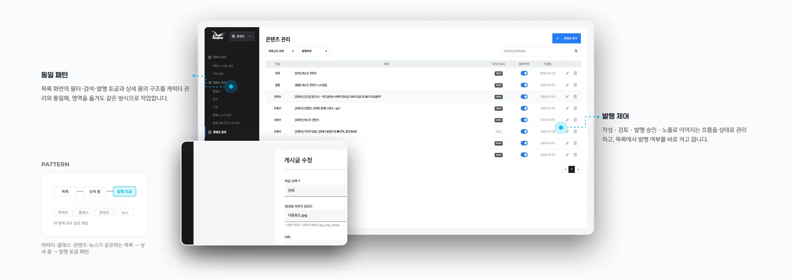
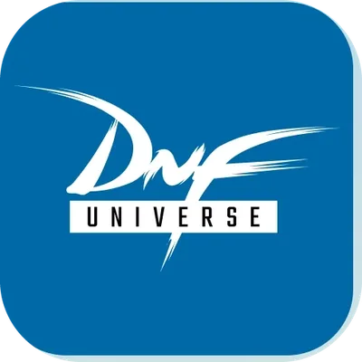
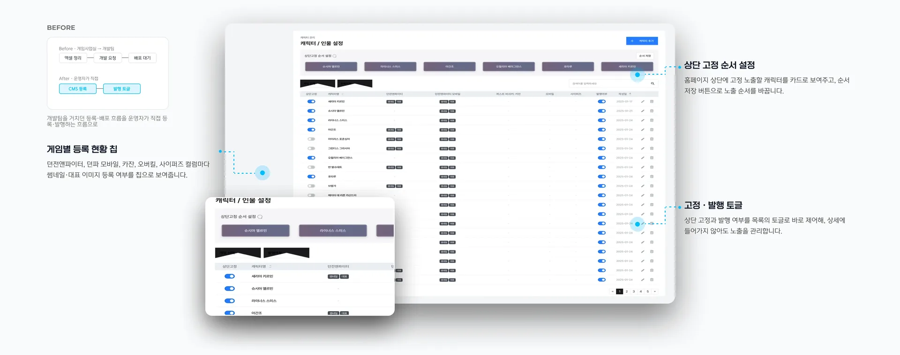
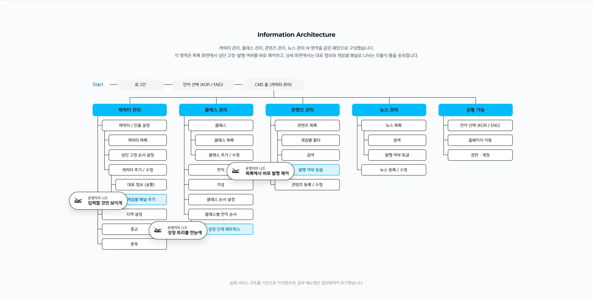
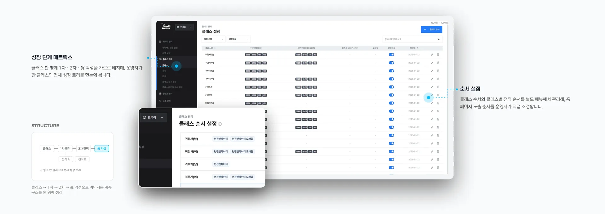
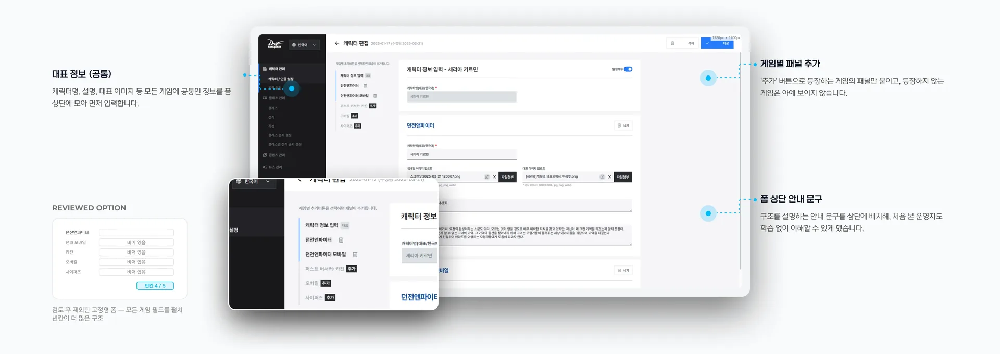
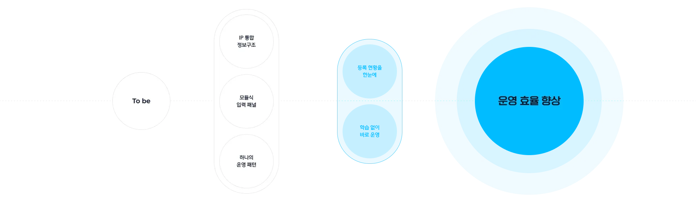

05 — Content · News
콘텐츠와 뉴스도
같은 패턴으로 운영

01
동일 패턴
목록의 필터·검색·발행 토글과 상세 폼 구조를 캐릭터 관리와 통일했습니다.
02
발행 제어
작성 · 검토 · 발행 승인 · 노출 흐름을 상태로 관리하고, 목록에서 발행 여부를 바로 켜고 끕니다.

던파 유니버스(DFU)는 던전앤파이터에서 시작된 세계관이 던파 모바일, 퍼스트 버서커: 카잔, 사이퍼즈로 확장되면서 흩어진 캐릭터와 스토리를 한곳에 모아 보여주는 IP 포털입니다.
이 포털의 콘텐츠를 운영자가 직접 등록·관리할 수 있도록 운영용 CMS를 신규 설계·구축했습니다. 1인 디자이너로 정보 구조부터 화면, 브랜드 사이트 시안까지 담당했습니다.

01 — Overview
캐릭터/인물 설정, 클래스 관리, 콘텐츠 관리, 뉴스 관리 등 IP 운영에 필요한 영역 전반을 다루는 운영용 CMS입니다. 같은 캐릭터가 여러 게임에 걸쳐 다르게 등장하는 IP 특성을 한 화면에서 통합 관리할 수 있도록 설계했습니다.
웹에 익숙하지 않은 게임사업실이 방향을 판단할 수 있도록 브랜드 사이트 시안을 시각화해 킥오프로 공유했고, 최종 디자인·퍼블리싱은 웹 에이전시와 협업했습니다.
Scope
CMS 4개 영역 + 브랜드 시안
캐릭터 · 클래스 · 콘텐츠 · 뉴스 관리
With
게임사업실 · 웹 에이전시
운영 요구 정의 / 최종 디자인 · 퍼블리싱
Project background
던파의 모험가는 게임마다 다르게 등장하지만, 그들의 이야기는 결국 하나의 세계 안에 있습니다.
기존 DFU 사이트는 스토리와 모험가를 모아두긴 했지만, 게임마다 다른 모험가와 스토리를 잇지 못해 유저의 흥미를 끌지 못했습니다. 기존 유저에게는 더 깊은 세계관을, 신규 유저에게는 자연스러운 진입점을 만드는 확장이었습니다.
02 — Problem
Who
웹에 익숙하지 않은 게임사업실 운영 담당자는
Why
여러 게임에 흩어진 캐릭터·클래스·콘텐츠를 매뉴얼 없이 다뤄야 하는데
Result
방대한 정보 속에서 탐색이 어렵고 입력 누락 위험이 높은 상황
03 — Approach
정식 리서치 대신, 위 문제를 풀기 위한 세 가지 설계 기준을 세웠습니다.
User Context
1인칭 관점으로
"내가 이 운영자라면"이라는 관점으로 학습 없이도 쓸 수 있는 화면을 기준으로 삼았습니다.
Data Structure
IP 특성을 구조에 그대로
게임마다 다르게 등장하는 IP 특성을 정보구조에 담아 한 화면에서 다루게 했습니다.
Workflow Reality
하나의 흐름으로 통일
영역이 달라도 목록 → 상세 폼 → 발행의 흐름을 같은 패턴으로 다룰 수 있게 했습니다.
04 — Information Architecture
각 영역은 목록 화면에서 상단 고정·발행 여부를 바로 제어하고, 상세 화면에서는 대표 정보와 게임별 패널로 나뉘는 모듈식 폼을 공유합니다.

실제 서비스 구조를 기반으로 작성했으며, 일부 메뉴명은 일반화하여 표기했습니다.
05 — Character List
게임별 등록 현황 칩
던전앤파이터, 던파 모바일, 카잔, 오버킬, 사이퍼즈 컬럼마다 이미지 등록 여부를 칩으로 보여줍니다.
상단 고정 순서 설정
상단 고정 캐릭터를 카드로 보여주고, 순서 저장 버튼으로 노출 순서를 바꿉니다.
고정 · 발행 토글
상단 고정과 발행 여부는 목록의 토글로 바로 제어합니다.
05 — Class Matrix

게임별 이미지 등록 현황
클래스마다 엠블렘 · 썸네일 · 대표 · 배경 이미지 등록 여부를 칩으로 보여줍니다.
클래스 순서 설정
별도 화면에서 드래그로 순서를 바꾸고, 저장으로 홈페이지 노출 순서를 확정합니다.
05 — Character Form

대표 정보 (공통)
캐릭터명, 설명, 대표 이미지 등 공통 정보를 폼 상단에 모아 먼저 입력합니다.
게임별 패널 추가
'추가' 버튼으로 등장하는 게임의 패널만 붙이고, 등장하지 않는 게임은 보이지 않습니다.
폼 상단 안내 문구
구조를 설명하는 안내 문구로 처음 본 운영자도 학습 없이 이해합니다.
05 — Content · News

동일 패턴
목록의 필터·검색·발행 토글과 상세 폼 구조를 캐릭터 관리와 통일했습니다.
발행 제어
작성 · 검토 · 발행 승인 · 노출 흐름을 상태로 관리하고, 목록에서 발행 여부를 바로 켜고 끕니다.
06 — Expected Effect
운영자가 입력할 것만 보고, 어느 영역이든 같은 방식으로 다루게 되면 등록·발행 속도와 콘텐츠 운영의 정확도가 함께 올라갈 거예요.

07 — Colors & Typography
BlackRGB 17/17/17 · #111111
Sky BlueRGB 0/188/255 · #00BCFF
Light GrayRGB 245/246/248 · #F5F6F8
WhiteRGB 255/255/255 · #FFFFFF
Typography
Aa123
Pretendard
DFU CMS,
Manage Simply
Structure Clearly
Operate Consistently
ABCDEFGHIJKLMNOPQRSTUVWXYZ abcdefghijklmnopqrstuvwxyz 1234567890 .:?!@*&%